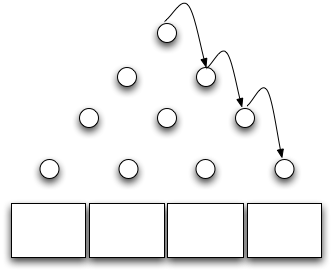

We'd like to include more extended examples like invasion percolation in this course, but they're surprisingly hard to write. One that seems simple at first is a Galton box simulator. As the diagram below shows, this is simply a a vertical board with interleaved rows of pins. Small balls are dropped in at the top, and bounce left and right as they hit pins until they land in the boxes at the bottom. Since each bounce randomly goes left or right, the distribution of balls is binomial, which, in the limit, approximates a normal distribution.

At first glance, this should be pretty simple to code up. Our objects are:
The physics is pretty simple too: balls fall under the force of gravity until they hit a wall, a pin, or a bin. If they hit a wall or a pin, we calculate their new velocity using conservation of energy and a bit of trig. If they hit a bin, we increment its counter so that we can see how closely our final result approximates a bell curve.
In order to calculate a new trajectory for a ball, though, we need to know exactly where it struck the pin, which means we need to know its radius and the pin's radius as well as the locations of their centers. We can simplify by making one or the other a point instead of a circle, but we obviously can't do that for both of them—the chances of any collisions at all would be pretty close to zero.
The choice isn't symmetrical: if the ball has a radius, then it can rotate as a result of collision. That will affect its trajectory because its rotation will dissipate energy, so it won't bounce as vigorously. Point masses should give the same distribution as real balls, but there's another trap waiting for us. Think about what happens when we drop a ball vertically on the top center pin. Its velocity when it hits is (0, vy), so if the coefficient of elasticity is E, its post-bounce velocity is (0, Evy), so it goes uuuuuuup, and comes back dooooown, and bounces with velocity (0, E2vy) and goes up, and comes down, and on and on. Barring numerical catastrophe, it never hits any other pins at all: after a few iterations, it's just vibrating infinitesimally in the Y axis on the top edge of the first pin.
We can "fix" this by introducing balls with some initial X velocity, but how much should they have? Alternatively, we could randomize bounces a little bit, but how? Do we calculate a post-bounce angle and perturb it by a small random amount? Or jitter the X and Y post-bounce energies? Or something else equally artificial? And no matter what we choose, how can we turn around after throwing together half a dozen arbitrary decisions and say that this is "simulating" anything?
There are days when I really miss the Game of Life...
Originally posted 2010-12-06 by Greg Wilson in Content.
comments powered by Disqus